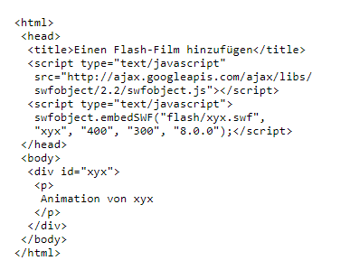
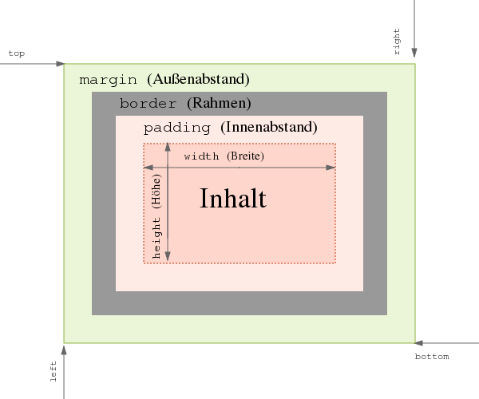

HTML und CSS
HTML und CSS werden benutzt um Webseiten zu schreiben. HTML ist hauptsächlich für den Text und die Struktur
da.
Mit CSS kann man das Aussehen der Webseite gestalten und beides zusammen ist eine sehr gute Kombination um
einfache Internetseiten zu erstellen.
Gut zu wissen ist wie das Internet entstanden ist und wie man auf eine Webseite überhaupt zugreift.
Internet
Das Internet ist ein Zusammenschluss von vielen verschiedenen Rechnern auf der ganzen Welt.
Das Internet wurde über 40 Jahre hinweg entwickelt.
Es besteht aus mehreren Fragmenten, die in der Vergangenheit entwickelt wurden.
Nur durch die einzelnen Erfindungen, Entdeckungen und Entwicklungen in der technischen Forschung konnte das
Internet entstehen.
Es besteht ein Irrglaube, dass das Internet ursprünglich von Militär stammt, dies ist aber nicht Fakt und
somit auch nicht wahr.
Das Internet hatte einen Vorläufer. Dieser hiess Arpanet und wurde 1969 entwickelt. Dieses Netz sollte die
Effizienz der Grossrechner zu der Zeit steigern.
Vinton G. Cerf und Rober E. Kahn entwickelten 1973 und 1973 einen Vorgänger von TCP, um andersartige Netze
miteinander zu verbinden. Nach weiterer Entwicklung wurde es als TCP/IP bekannt.
Zunächst konnten nur Universitäten das Internet benutzen, jedoch beschloss die National Science Foundation
1990 das Internet öffentlich zu machen.
Mit dem 1984 entwickelten DNS wurde es möglich, auf der ganzen Welt Computer mit merkbaren Namen zu
adressieren.
Heute werden auch viele Grafiken und Videos ins Netz eingebunden. In dieser Zeit spielt es auch eine grosse
Rolle Webseiten für mobile Geräte zu optimieren.
 Visualisierung eines Teils des Internets.
Visualisierung eines Teils des Internets.
Zugriff auf das Internet
Der Zugriff auf das Internet erfolgt über Ihren Internetanbieter (ISP). Dieser muss ein Modem oder einen
Router
zur Verfügung stellen, damit Sie ins Internet gelangen. Die Verbindung vom ISP mit Ihrem Haus sollte auch
im vorherein bestehen oder
erstellt werden. Sobald alles korrekt miteinander verbunden ist, haben Sie Zugriff auf das Internet, diesen
müssen Sie aber noch richtig konfigurieren.
Der Zugriff auf Internetseiten wird durch das Domain Name System (DNS) vereinfacht. Für jede Webseite
bräuchte man normalerweise die vollständige IP des Webservers,
doch mit dem DNS hat man nur den "Namen" der Webseite zu wissen und die Top-Level-Domain, also .ch oder
.com.
Die Adresse (URL) wird bei Eingabe und Bestätigung im Browser dann nach der IP aufgelöst. Die Daten der
Webseite werden dann vom Webserver der Seite geladen
und man sieht die Seite, die man eingegeben hat.
Entwicklungsumgebung
Eine integrierte Entwicklungsumgebung (IDE) stellt Programmierern eine Sammlung der
wichtigsten Werkzeuge zur Softwareentwicklung unter einer Oberfläche zur Verfügung.
Die Arbeit für die Erstellung von Programmen wird dadurch vereinfacht. In diesem Falle ist es
eine IDE für HTML und CSS.
Da die einzelnen Werkzeuge untereinander Informationen austauschen können. lassen sich viele Arbeitsgänge
beim Programmieren (schreiben) vereinfachen und beschleunigen. Beispielsweise ist es möglich, Fehler bei der
Ausführung
der Programme direkt im Quelltext zu markieren und dadurch einfacher zu beheben. Ohne die Nutzung einer
integrierten Entwicklungsumgebung müssten verschiedene Programme getrennt voneinander ausgeführt und
manuell
synchronisiert werden.
Die wichtigsten Bestandteile einer Entwicklungsumgebung für HTML & CSS
- Editor
- Browser
- Development Tools
- FPT-Client
- Webserver
- Grafik Tools
- Wissensquellen
Leistungsfähige Editoren sind in der Lage, schon beim Eintippen
den Kontext zu erkennen, und bieten Funktionen zur automatischen
Vervollständigung des Programmcodes. Programmierer müssen deshalb
nicht mehr die komplette Syntax aller Befehle, Felder oder Variablen
exakt kennen, sondern können diese direkt beim Tippen passend auswählen.
Editoren verbessern ausserdem die Lesbarkeit und Übersichtlichkeit
des Codes, indem sie ihn strukturieren und Befehle oder Variablen eindeutig kennzeichnen.
HTML
Die Hypertext Markup Language (HTML), ist eine textbasierte Auszeichnungssprache
zur Strukturierung digitaler Dokumente
wie Texte mit Hyperlinks, Bildern und anderen Inhalten.
HTML-Dokumente sind die Grundlage des World Wide Web und werden von Webbrowsern dargestellt.
Neben den vom Browser angezeigten Inhalten können HTML-Dateien zusätzliche Angaben
in Form von Metainformationen enthalten, z.B. über die im Text verwendeten Sprachen, den Autor
oder den zusammengefassten Inhalt des Textes.
HTML wird vom World Wide Web Consortium (W3C) und der Web Hypertext Application Technology Working
Group (WHATWG) weiterentwickelt. Die aktuelle Version ist seit dem 14. Dezember 2017 HTML 5.2,
die bereits von vielen aktuellen Webbrowsern und anderen Layout-Engines unterstützt wird.
Auch die die Extensible Hypertext Markup Language (XHTML) wird durch HTML5 ersetzt.
Elemente
HTML besteht aus Elementen und Attributen. Ein solches Element besteht aus Tags. Genauer besteht es aus
einem Start-Tag,
Element-Inhalt und einem End-Tag. In einem Start-Tag können dann Attribute sein. Ein Attribut ist aus
einem Namen und einem Wert gebildet. Um eine simple Webseite zu erstellen, benötigt man nur einen Editor
und Webbrowser.
So sieht es aus:

Elemente sind wie Behälter. Sie teilen Ihnen etwas über die Informationen zwischen ihrem öffnenden und
schliessenden Tag mit.
Attribute geben zusätzliche Informationen über den Inhalt eines Elements. Sie stehen im öffnenden Tag des
Elements und bestehen aus zwei Teilen,
einem Namen und einem Wert, die durch ein Gleichheitszeichen getrennt sind.
Der Attributname sagt aus, welche Art von Zusatzinformationen über den Inhalt des Elements Sie damit
angeben. Es sollte in Kleinbuchstaben geschrieben werden.
Der Wert ist die Information oder Einstellung des Attributs und sollte in doppelten Anführungszeichen
stehen. Die verschiedenen Attribute können jeweils
unterschiedliche Arten von Werten aufweisen.
Die meisten Attribute können nur jeweils bei einem bestimmten Element eingesetzt werden. Einige wenige
können jedoch auch in beliebigen Elementen stehen.
Die meisten Attributwerte sind entweder vordefiniert oder folgen einem festgelegten Format.
body
Das body-Element ist der Hauptkörper einer Webseite. Alles was in diesem Element steht, wird im
Hauptfenster des Browsers angezeigt.
head
Vor dem body-Element steht oft das Element "head" mit Informationen über die Seite. Innerhalb eines
head-Elements finden Sie gewöhnlich ein title-Element.
title
Der Inhalt des title-Elements wird entweder ganz oben im Browser angezeigt, oberhalb der Stelle, an der Sie
gewöhnlich den URL der gewünschten Seite eingeben,
oder auf dem Reiter der Registerkarte für die Seite.
Überschriften
HTML besitzt offiziell sechs Ebenen für Überschriften. Diese gehen von h1 bis h6. Inoffiziell kann man
unendlich viele
Überschriften in HTML haben. h1 wird für Hauptüberschriften benutzt und h2 für Zwischenüberschriften.
Bei den weiteren h wird die Schriftgrösse kleiner. Die grösse der Schrift kann von Browser zu Browser
variieren.
Man kann auch selbst die Grösse der Schrift und die Schriftart ändern.
Absätze
Absätze können mit dem Element "p" erstellt werden. Dieses besitzt ein schliessendes und öffnendes Tag.
Standardmässig zeigt ein Browser den Absatzanfang in einer neuen Zeile an und lässt etwas Platz zu den
nachfolgenden Absätzen.
Fett & Kursiv
b
Wenn Sie Wörter mit den "b" Tags umgeben erscheinen sie in Fettschrift.
Das Element "b" kann auch für einen Textabschnitt stehen, der grafisch auf andere Weise ausgezeichnet
werden soll.
i
Wörter, die mit "i" umgeben sind, erscheinen in Kursivschrift.
Exponenten & Indizes
sup
Das Element "sup" umschliesst Zeichen, die hochgestellt werden sollen.
sub
Das Element "sub" umschliesst Zeichen, die tiefgestellt werden sollen.
Zeilenumbrüche & horizontale Linien
br/
Wenn man mitten in einem Absatz einen Umbruch will, kann man das Tag "br/" benutzen.
hr/
Um zwei Themen voneinander abzugrenzen, können Sie mit dem Tag "hr/" eine horizontale Linie zwischen den
Abschnitten einfügen.
Es gibt einige wenige Elemente wie "hr/", bei denen nichts zwischen dem öffnenden und dem schliessenden
Element steht. Dies sind sogenannte
leere Elemente.
Ein leeres Element hat gewöhnlich nur ein Tag. Vor der schliessenden Spitze der Klammer stehen ein
Leerzeichen und ein Schrägstrich.
Verstärkung & Hervorhebung
strong
Das Element "strong" gibt an, dass der Inhalt von wichtiger Bedeutung ist. Normalerweise zeigen Browser die
Inhalte von "strong" Elementen fett an.
em
Das Element "em" deutet eine Hervorhebung an, die die Bedeutung eines Satzes leicht verändern kann.
Standardmässig zeigen Browser die Inhalte von em-Elementen kursiv an.
Zitate
blockquote
"blockquote" wird für längere Zitate verwendet, die einen ganzen Absatz einnehmen. Das Element "p" wird
Innerhalb
von "blockquote" benutzt.
q
Wird für kürzere Zitate innerhalb eines Absatzes verwendet. Browser sollen q-Elemente mit Anführungszeichen
umgeben, dies macht
Internet Explorer nicht, weshalb "q" gemieden wird.
In beiden Elementen kann das Attribut "cite" verwendet werden, um die Quelle des Zitats anzugeben. Der Wert
sollte ein URL mit weiteren Informationen über die Quelle sein.
Besonderes Markup
Die Entwicklung von HTML
Es gab schon einige Vorgängerversionen von HTML. Bei jeder neuen Version wurden neue Elemente und Attribute hinzugefügt und ältere entfernt. Aber durch die neuen Version mussten auch die Browser aktualisiert werden.
Einige Leute haben nicht die aktuellste Version ihres Browsers und diese können dann nicht die neueste Version von HTML korrekt verarbeiten. Dies kann zu Fehlanzeigen einer Webseite führen.
Doctype
Da es verschiedene Versionen von HTML gibt, sollte eine Webseite mit einer Dokumenttypdeklaration (DOCTYPE) beginnen, die dem Browser mitteilt, welche dieser Versionen verwendet wird.
Für HTML5 gilt als Deklaration: !doctype html in Klammern.
Die Deklaration steht immer ganz am Anfang eines HTML-Dokuments.
Das Attribut ID
Jedes HTML-Element kann das Attribut "id" aufweisen, mit dem das Element von allen anderen Elementen auf der Seite unterschieden wird. Der Wert dieses Attributs muss mit einem
Buchstaben oder Unterstrich beginnen, also keine Zahl oder anderen Zeichen.
Zwei Elemente auf dergleichen Seite dürfen nicht denselben Wert für "id" aufweisen.
"id" ist ein globales Attribut, da es für alle Elemente verwendet werden kann.
Das Attribut Class
Alle HTML-Elemente können auch das Attribut "class" aufweisen. Anstatt ein einzelnes element in einem Dokument eindeutig zu bezeichnen, ist es manchmal notwendig, mehrere Elemente zu markieren,
die sich auf die gleiche Weise von den anderen Elementen auf der Seite abheben sollen.
Es ist auch möglich, dass Sie zwischen Links zu anderen Seiten Ihrer Webseite und Links zu externen Webseiten unterscheiden wollen.
Dazu können Sie das Attribut "class" verwenden, dessen Wert die Klasse angibt, zu der das Element gehören soll.
Die class-Attribute unterschiedlicher Elemente können den gleichen Wert aufweisen.
Blockelemente
Einige Elemente beginnen bei der Anzeige im Browserfenster immer in einer neuen Zeile. Dies sind die sogenannten Blockelemente. Beispiele für Blockelemente sind h1, p, ul und li.
Das folgende Bild veranschaulicht das Verhalten von Inline- und Blockelementen.

Andere Elemente stehen in derselben Zeile wie ihre Nachbarelemente. Dies sind Inline-Elemente.
Text und Elemente in Blöcken gruppieren mit dem Element "div"
Mit diesem Element werden Elemente in einem Block gruppiert.
Dieses Element bietet bessere Ansprechmöglichkeiten für viele ELemente und damit kann man leichter verschiedene Abschnitte gestalten und adressieren.
Im Browser starten die Inhalte eines div-Elements in einer neuen Zeile.
Ein weiterer Vorteil ist die Übersichtlichkeit in Code. Sinnvoll ist es auch Kommentare hinter einem schliessenden div-Tag anzubringen.
Text und Elemente Inline gruppieren mit Span
Das Element "span" wirkt wie eine Inline-Version von "div". Span wird auf zwei verschiedene Arten eingesetzt.
- Es enthält einen Textabschnitt, wenn es kein anderes geeignetes Element gibt, zm ihn von dem umgebenden Text abzusetzen.
- Es enthält eine Reihe von Inline-Elementen.
Am häufigsten wird "span" benutzt, um das Erscheinungsbild des darin eingeschlossenen Inhalts mit CSS zu beeinflussen.
Gewöhnlich weist ein span-Element aus folgenden Gründen ein id- oder class-Attribut auf:
- Um den Zweck des span-Elements zu erklären.
- Um CSS-Stile auf Elemente anzuwenden, deren Attribut einen bestimmten Wert aufweist.
iFrames
Das Element "iFrame" wird benutzt um andere Seiten in Ihrer Seite zu laden. Es ist ein Feld in der Seite, das eine andere Seite anzeigt.
iFrame ist eine Abkürzung für "Inline-Frame". Es wird meistens verwendet um Google-Maps auf eine Seite zu laden. Man kann aber jede beliebige Webseite benutzen.
Folgend sind die wichtigsten Attribute für iFrame aufgelistet.
- src:
gibt den URL der Seite an, die in dem Frame angezeigt werden soll.
- height:
Gibt die Höhe an.
- width:
Gibt die Breite des iFrames in Pixeln an.
- seamless:
Das neue Attribut löscht Rollbalken aus. Braucht keine Wert, enthält aber häufig den Wert "seamless". Für ältere Browser untauglich.
Informationen über Ihre Seite
meta
Das Element "meta" befindet sich innerhalb des Elements "head" und enthält Informationen über die Webseite.
Es ist für die Benutzer nicht sichtbar. So teilt es Suchmaschinen etwas über die Seite und deren Autor mit und gibt an, ob die Seite zeitkritisch ist.
"meta" ist ein leeres Element ohne schliessendes Tag. Die enthaltenen Informationen stehen in Attributen.
Die gebräuchlichsten Attribute sind "name" und "content", die als Paar eingesetzt werden. Darin werden Eigenschaften der gesamten Seite angegeben.
Der Wert von "name" ist dabei jeweils die Eigenschaft, die Sie festlegen, und der Wert von content der Wert, den diese Eigenschaft aufweisen soll.
"name" kann jeden beliebigen Wert annehmen. Einige häufig verwendete vordefinierte Werte für dieses Attribut sind:
- description:
Bezeichnet eine Beschribung der Seite, die maximal 155 Zeichen lang sein darf. Suchmaschinen ziehen diese Beschreibung dazu heran, um zu erkennen, worum es auf der Seite geht, und zeigen sie nachmal
auch in den Suchergebnissen an.
- keywords:
Bezeichnet eine Liste durch Kommata getrennter Wörter, nach denen Benutzer suchen können, um zu Ihrer Seite zu gelangen. In der Praxis haben diese Schlüsselwörter
keine erkennbare Auswirkung mehr darauf, wie Suchmaschinen Ihre Website indizieren.
- robots:
Gibt an, ob Suchmaschinen diese Seite zu ihren Suchergebnissen hinzufügen sollen oder nicht. Bei dem Wert "noindex" soll die Seite nicht in die Ergebnisse aufgenommen werden.
Mit dem Wert "nofollow" sorgen Sie dafür, dass die betreffende Seite in die Suchergebnisse einbezogen werden kann, aber nicht die Seiten, auf die sie verlinkt sind.
Im Element "meta" wird auch das Attributpaar aus "http-equiv" und "content" verwendet.
Maskierungszeichen
Einige Sonderzeichen werden im HTML-Code verwendet und sind daher reserviert.
Wenn Sie solche Zeichen auf Ihrer Webseite anzeigen lassen möchten, müssen Sie sie "maskieren". Um Beispielsweise eine öffnende spitze Klammer darzustellen, schreiben Sie
entweder < oder <.
Bei der Verwendung von Maskierungszeichen müssen Sie die Seite unbedingt im Browser überprüfen, um sicherzustellen, dass das richtige Symbol angezeigt wird. Manche Schriftarten enthalten
nämlich nicht alle Zeichen. In diesem Fall müssen Sie im CSS-Code eine andere Schriftart für das Sonderzeichen festlegen.
Für die "Übersetzung" beim Maskieren werden Online-Tools angeboten, die kostenlos zur Verfügung stehen.
Beispielhafte Tools:
https://www.amazingweb.de/escape.php und HTML Entities Encoder/Decoder von web2generator.
Formulare
Mit HTML-Formularen steht Ihnen eine Reihe von Elementen zur Verfügung, um Daten von den Benutzern
abzufragen.
Funktionsweise Formulare
Der Benutzer füllt das Formular aus und klickt auf eine Schaltfläche, um die Informationen an einen Server
zu übertragen.
- Die Namen der einzelnen Steuerelemente zusammen mit den vom Benutzer eigegebenen oder
ausgewählten Werten werden an den Server gesendet.
- Der Server verarbeitet die Informationen mit einer Programmiersprache wie PHP, C#,
VB.net oder Java. Unter Umständen werden die Informationen auch in einer Datenbank gespeichert.
- Der Server erstellt auf der Grundlage der Empfangenen Informationen eine neue Seite,
die er an den Browser zurücksendet.
Ein Formular kann mehrere Steuerelemente enthalten, die jeweils andere Informationen erfassen. Der Server
muss wissen, welche Eingabedaten zu welchem Steuerelement gehören.
Aufbau von Formularen
form
Formularsteuerelemente stehen in einem form-Element. Es muss über das Attribut "action" verfügen und hat
gewöhnlich auch die Attribute "method" und "id".
action
Jedes form-Element muss das Attribut "action" aufweisen. Sein Wert ist der URL der Seite auf dem Server,
der beim Einreichen des Formulars die Informationen empfängt.
method
Formulare können mit zwei verschiedenen Methoden gesendet werden: "get" und "post".
Bei "get" werden die Werte aus dem Formular an das Ende des URLs angehängt, der im Attribut "action"
angegeben ist. Diese Methode eignet sich ideal für:
- Kurze Formulare
- Abrufen von Daten vom Webserver
Bei der Methode "post" werden die Werte in sogenannten HTTP-Headern gesendet. Verwenden Sie "post" im
Allgemeinen bei Formularen der folgenden Art:
- Formulare, in denen Benutzer Dateien hochladen können
- Lange Formulare
- Formulare mit sensiblen Daten
- Formulare, die Informationen zu einer Datenbank hinzufügen oder daraus entfernen
Wird die Methode nicht angegeben, so werden die Formulardaten mit "get" gesendet.
id
Das Attribut "id" wird verwendet, um das Formular eindeutig von anderen Elementen auf der Seite zu
unterscheiden.
input
Mit dem Element "input" werden verschiedene Formularsteuerelemente erstellt, deren Art durch den Wert des
Attributs "type" bestimmt wird.
Hat das Attribut "type" den Wert "text" wird ein einzeiliges Texteingabefeld erzeugt.
name
Wenn Benutzer Informationen in ein Formular eingeben, muss der Server wissen, zu welchem
Formularsteuerelement welche Daten gehören. Jedes Formularsteuerelement braucht daher
das Attribut "name", dessen Wert das Steuerelement bezeichnet und zusammen mit den eingegebenen
Informationen an den Server gesendet wird.
maxlength
Mit dem Attribut "maxlength" geben Sie an, wie viele Zeichen maximal in ein Feld eingetragen werden dürfen,
bei einer Jahreszahl könnte das z.B. 4 sein.
Passworteingabe
type="password"
Hat das Attribut "type" den Wert "password", wird ein Textfeld erstellt, das sich wie ein einzeiliges
Texteingabefeld verhält, die eingegebenen Zeichen aber nicht anzeigt.
Wenn jemand also dem Benutzer bei der Registrierung über die Schulte blickt, kann er das Passwort nicht
lesen.
name
Das Attribut "name" bezeichnet das Passwortfeld und wird zusammen mit dem eingegebenen Passwort an den
Server gesandt.
Texteingabe (Mehrzeilig)
textarea
Mit dem Element "textarea" erstellen Sie ein mehrzeiliges Texteingabefeld. Anders als die anderen
Eingabeelemente ist ein solcher Textbereich nicht solcher und muss daher über ein öffnendes und ein
schliessendes Tag verfügen.
Text, der zwischen den Tags, wird beim Laden der Seite in dem Textfeld angezeigt.
Löscht der Benutzer diesen vorgegebenen Text nicht, wird er zusammen mit der eingegebenen Nachricht an den
Server gesendet.
Wenn Sie ein neues Formular erstellen, sollten Sie Breite und Höhe von "textarea" mit CSS festlegen.
Radio-Buttons
input
type="radio"
Radio-Buttons erlauben es. genau eine von mehreren Optionen auszuwählen.
name
Das Attribut "name" wird zusammen mit dem Wert der vom Benutzer ausgewählten Option an den Server
gesendet. Wenn Sie den Benutzern eine Frage stellen und mehrere Antworten in Form von Radio-Buttons
anbieten, muss das Attribut "name" für alle möglichen Antworten zu dieser Frage denselben Wert aufweisen.
value
Das Attribut "value" enthält den Wert, der für die ausgewählte Option an den Server gesendet wird. Die
Werte der einzelnen Schalter in einer Gruppe müssen eindeutig sein.
checked
Mit dem Attribut "checked" können Sie angeben, welche Option beim Laden der Seite vorausgewählt sein soll.
Der Wert dieses Attributs lautet "checked". In einer
Gruppe von Radio-Buttons kann höchstens einer dieses Attribut aufweisen.
type="checkbox"
Bei Checkboxen können Die Benutzer zur Beantwortung einer Frage mehrere Optionen auswählen.
name
Das Attribut "name" wird zusammen mit den Werten der vom Benutzer ausgewählten Optionen an den Server
gesendet. Wenn Sie den Benutzern eine Frage stellen und mehrere Antworten in Form von Checkboxen anbieten,
muss das Attribut "name"
für alle möglichen Antworten zu dieser Frage denselben Wert aufweisen.
value
Das Attribut "value" enthält den Wert, der bei der Auswahl der Checkbox an den Server gesendet wird.
checked
Das Attribut "checked" gibt an, dass die Checkbox beim Laden der Seite vorausgewählt sein soll. Wenn sie
dieses Attribut verwenden, geben Sie ihm den Wert "checked".
Dropdownlisten
select
In einer Dropdownliste können die Benutzer eine Option aus einer herauskappbaren Liste auswählen.
Dropdownlisten werden mit dem Element "select" erstellt.
Es muss mindestens zwei option-Elemente enthalten. Auch hier kann wieder das Attribut "name" verwendet
werden.
option
Mit dem Element "option" werden die Optionen angegeben, unter denen die Benutzer auswählen können. Die
Worte, die zwischen den Tags stehen, werden in der Dropdownliste angezeigt.
value
In option-Elementen dient das Attribut "value" dazu, den Wert anzugeben, der bei der Auswahl der
zugehörigen Option zusammen mit dem Namen des Steuerelements an den Server gesendet wird.
selected
Mit dem Attribut "selected" können Sie eine Option beim Laden der Seite vorab auswählen lassen. Der Wert
dieses Attributs lautet "selected".
Wenn Sie dieses Attribut nicht verwenden, wird beim Laden der Seite die erste Option angezeigt. Trifft der
Benutzer keine Auswahl, so wird dieses erste Element als Wert für das Steuerelement an den Server gesendet.
Mehrfachauswahllisten
select
size
Mit dem Attribut "size" können Sie eine Dropdownliste so verändern, dass mehrere Optionen gleichzeitig
angezeigt werden. Der Wert ist die gewünschte Anzahl der sichtbaren Optionen.
Leider wird dieses Attribut von den Browsern nicht perfekt umgesetzt, weshalb gründliche Tests erforderlich
sind, wenn Sie es verwenden möchten.
multiple
Wenn Sie das Attribut "multiple" verwenden und ihm den Wert "multiple" geben, können Sie den Benutzern
erlauben, mehrere Optionen auszuwählen.
Dateieingabefeld
input
Wenn Sie den Benutzern die Möglichkeit geben möchten, Dateien hochzuladen, brauchen Sie dazu ein Dateieingabefeld.
type="file"
Diese Art von Steuerelement ruft eine Schaltfläche zur Dateiauswahl hervor. Wenn der Benutzer darauf klickt, öffnet sich ein Fenster,
in dem er die Dateien auf seinem Computer auswählen kann, die er auf die Webseite hochladen möchte.
Wenn Sie den Benutzer das Hochladen von Dateien anbieten, muss das Attribut "method" des form-Elements den Wert "post" aufweisen.
Sendeschaltfläche
input
type="submit"
Die Sendeschaltfläche dient dazu, das Formular an den Server zu übertragen.
name
Eine solche Schaltfläche kann das Attribut "name" aufweisen, dies ist jedoch nicht erforderlich.
value
Das Attribut "value" legt den Text fest, der auf der Schaltfläche erscheint. Sie sollten hier genau angeben, was bei einem Klick auf die Schaltfläche geschieht, denn
die Standardbeschriftung lautet bei einigen Browsern einfach "Abfrage absenden", was sich nicht für alle Arten von Formularen eignet.
Bilder als Schaltflächen
Wenn Sie für die Sendeschaltfläche ein Bild verwenden möchten, geben Sie dem Attribut "type" den Wert "image".
Die Attribute "src", "width", "height" und "alt" funktionieren hierbei genauso wie beim Element "img".
Schaltflächen & Versteckte Steuerelemente
button
Das Element "button" wurde eingeführt, um Webautoren mehr Kontrolle über Erscheinungsbild ihrer Schaltflächen zu geben, ausserdem ist es damit möglich, auch andere Elemente in Schaltflächen
aufzunehmen.
input type="hidden"
Solche Elemente sind auf der Seite nicht sichtbar. Dabei können die Autoren von Webseiten ihren Formularen Werte hinzufügen, die für die Benutzer nicht sichtbar sind.
Formularsteuerelemente beschriften
label
Das Element "label" kann auf zwei Arten verwendet werden:
Es kann sowohl die Beschriftung als auch das Steuerelement einschliessen.
Es kann unabhängig von dem Steuerelement im Code stehen und mit dem Attribut "for" angeben, für welches Elemente es da ist.
for
Das Attribut "for" gibt an, zu welchem Steuerelement eine Beschriftung gehört. Die Radio-Buttons in dem Beispiel werden durch den Wert des Attributs "id" eindeutig von alle anderen Elementen auf der
Seite unterschieden. Der Wert des Attributs "for" ist der id-Wert des Steuerelements, zu dem die Beschriftung gehört. Die Attribute "for" und "id" lassen sich für alle Formularsteuerelemente verwenden.
Bei einem label-Element für eine Checkbox oder einen Radio-Button können die Benutzer zur Auswahl sowohl auf das eigentliche Steuerelement als auch auf die Beschriftung klicken. Durch diese Erweiterung des anklickbaren Bereichs
lässt sich das Formular leichter ausfüllen. Die Position der Beschriftungen ist sehr wichtig. Wenn die Benutzer nichts wissen, wo sie welche Informationen eingeben müssen, werden Sie das Formular wahrscheinlich nicht korrekt ausfüllen.
Formularelemente gruppieren
fieldset
Gruppen zusammengehöriger Steuerelemente können Sie in einem fieldset-Element zusammenfassen. Das ist vor allem bei umfangreichen Formularen nützlich.
Die meisten Browser zeigen um den Rand eines fieldset-Bereichs eine Linie an, um den Zusammenhang zwischen den darin enthaltenen Elementen deutlich zu machen. Das Aussehen dieser Linien können Sie mit CSS anpassen.
legend
Direkt hinter dem öffnenden fieldset-Tag kann das Element "legend" stehen. Es enthält eine Beschriftung, die den Zweck dieser Gruppe von Formularsteuerelementen angibt.
Listen
In HTML stehen drei verschiedene Arten von Listen zur Verfügung.
- Geordnete Listen (ol)
- In geordneten Listen sind die Einträge durchnummeriert.
- Ungeordnete Listen (ul)
- Die Einträge von ungeordneten Listen beginnen mit einem Aufzählungssymbol.
- Definitionslisten (dl)
- Definitionslisten bestehen aus Begriffen und ihren Definitionen.
Für die oberen Beiden Listen werden li-Elemente benutzt. Für "dl" wird "dt" und "dd" verwendet.
"dt" gibt den zu definierenden Term an und in "dd" ist die Definition.
Es gibt auch noch die Möglichkeit in einer Liste eine Liste zu erstellen. Dies nennt man dann
verschachtelte
Liste. Browser zeigen verschachtelte Listen weiter eingerückt an als die übergeordnete Liste. Bei
verschachtelten ungeordneten Listen
ändert der Browser gewöhnlich auch das Aufzählungssymbol.
Flash, Video & Audio
Flash ist eine weit verbreitete Technologie, um Animationen, Video- und Audioinhalte zu Websites hinzuzufügen.
Flash-Filme zu einer Webseite hinzufügen
Am häufigsten wird Flash mit JavaScript in Webseiten aufgenommen. Es gibt verschiedene Skripts, mit denen Sie dies tun können, ohne viel von JavaScript verstehen zu müssen.
Ein Skript für SWF-Dateien, das gerne benutzt wird heisst SWFObject. Dies kann man kostenlos von Google beziehen.
Ein Vorteil dieser Technik ist, dass bei Browsern, die kein Flash anzeigen können, ein Alternativtext ausgegeben werden kann.
Bei dieser Technik wird mit einem div-Element Platz für den Flash-Film vorgehalten. Der Wert für das id-Attribut dieses div-Elements wird vom Skript SWFObject verwendet.
Innerhalb des div-Elements können Sie alternativen Inhalt für Benutzer unterbringen, die Flash nicht abspielen können.

Videoformate & Player
Es gibt verschiedene Videoformate wie AVI, Flash Video, H264, MPEG, Ogg Theora, QuickTime, WebM und Windows Media.
Verschiedene Browser können nicht alle Videoformate wiedergeben. Damit Ihre Besucher Ihre Videos onlineschauen können, müssen die Filme unter Umständen in ein anderes Format konvertiert werden.
Diese Umwandlung von einem Videoformat in ein anderes wird auch "Codierung" genannt.
Ein beispielhaftes Tool für die Konvertierung von Videos ist z.B. Miro Video Converter
Um ein Film zu einer Webseite hinzuzufügen kann auch ein externer Dienst wie YouTube oder Vimeo verwendet werden.
Dies hat mehrere Vorteile:
- Player wird von den meisten Webbrowsern unterstützt
- Automatische Konvertierung des Videos für die verschiedenen Browser
- Keine Zusatzkosten für die Unterbringung auf YouTube
Nachteile:
- Einschränkung zulässiger Inhalte
- Werbungsverbot
- Bildqualität einschränken
HTML-Element "Video"
Auch dieses Element kann verwendet werden um Videos auf einer Seite einzubinden.
Dieses Element ist jung, jedoch schon weit verbreitet.
Das Problem ist, dass nur die modernsten Browser dieses Element unterstützen.
Als Videoformate sollten man H264 und WeM benutzen.
Es gibt viele Attribute für dieses Element.
Attribute:
- src
- Gibt den Pfad und die Quelle für das Video an.
- poster
- Gibt ein Bild an, dass angezeigt wird, wenn das Video am laden ist.
- autoplay
- Automatische Wiedergabe des Videos
- loop
- Erneute Widergabe nach Ende des Videos
- preload
- Gibt dem Browser an, was er tun soll, während das Video lädt. Kann folgende Werte haben:
- none
- Der Browser soll das Video erst laden, wenn der Benutzer auf die Wiedergabeschaltfläche klickt.
- auto
- Der Browser lädt das Video zusammen mit der Seite herunter.
- metadata
- Der Browser erfasst nur Informationen wie die Grösse, das erste Einzelbild, die Trackliste und die Dauer.
Audioinhalte zu Webseiten hinzufügen
Das übliche Format für Audio auf Webseiten ist MP3. Es gibt drei Arten um diese in eine Seite einzufügen.
Hostingdienst
Webseiten, die das Hosten und einen Player zur Einbettung anbieten, sind beispielsweise SoundCloud.com und MySpace.com
Flash verwenden
Es können auch bestimmte Flash-Player verwendet werden, mit denen man MP3-Dateien wiedergeben kann.
HTML5 verwenden
Auch hier existiert ein Element, damit ein Browser ein Audio-Element wiedergeben kann. Dieses ist ähnlich wie das Element "video".
HTML-Element "Audio"
Wie beim Video-Element braucht es verschiedene Audioformate für die unterschiedlichen Browser.
Die Attribute hier sind gleich wie beim Video-Element. Ausser, dass es hier kein "poster" und "metadata" gibt.
Links
Links sind das Schlüsselmerkmal des Webs, denn damit ist es möglich, sich von einer Webseite zur anderen zu
bewegen.
Standardmässig werden Ihnen folgende Arten von Links begegnen:
- Link von einer Webseite zu einer anderen
- Links von einer Seite zu einer anderen auf derselben Webseite
- Links von einem Teil einer Webseite zu einem anderen Teil derselben Seite
- Links, die in einem neuen Browserfenster geöffnet werden
- Links, die Ihr E-Mail-Programm starten und eine neue E-Mail-Nachricht mit einer
Adresse versehen
Links werden mit dem Element "a" erstellt. Die Benutzer können auf alles klicken, was sich zwischen dem
öffnenden Tag und dem schliessenden Tag befindet.
Zu welcher Seite der Link führt, geben Sie im Attribut href an.
Der Text zwischen den Tags ist der Linktext. Er sollte nach Möglichkeit angeben, wohin die Benutzer
gelangen, wenn sie drauf klicken.
Absolute URLs
URL steht für Uniform Resource Locator. Jede Webseite verfügt über ihren eigenen URL. Dabei handelt es sich
um die Webadresse, die Sie im Browser eingeben, wenn Sie diese Seite
besuchen möchten. Ein absoluter URL beginnt mit dem Domänennamen der Webseite. Darauf kann der Pfad zu
einer einzelnen Seite folgen. Ist keine Seite angegeben,
wird die Startseite der Webseite angezeigt.
Relative URLs
Für Links zu anderen Seiten derselben Webseite können Sie relative URLs verwenden. Das ist eine Art
Kurzversion eines
absoluten URLs, da der Domänenname nicht angegeben werden muss.
Relative URLs sind hilfreich, wenn Sie eine Webseite auf Ihrem Computer erstellen, da Sie dadurch Links
zwischen den Seiten aufbauen können, ohne
einen Domänennamen einzurichten oder für das Hosting zu sorgen.
Bei Links zu Seiten auf Ihrer eigenen Webseite müssen Sie den Domänennamen nicht angeben, sondern können
relative URLs verwenden. Dabei handelt es sich
um eine kürzere Möglichkeit, um dem Browser mitzuteilen, wo sich eine Seite relativ zur aktuellen Seite
befindet.
Da Sie den Domänennamen nicht in jedem Link wiederholen müssen, lassen sich diese Verknüpfungen auch
einfach schreiben.
Befinden sich alle Dateien Ihrer Webseite in einem einzigen Ordner, geben Sie einfach den Dateinamen der
Seite an.
Ist die Webseite dagegen in mehrere Ordner unterteilt, müssen Sie dem Browser mitteilen, wie er von der
aktuellen Seite zu derjenigen gelangt, die verlinkt ist.
Verzeichnisstruktur
Bei grösseren Websites ist es sinnvoll, den Code zu gliedern, indem Sie die Seiten jeweils in Ordner für
die Abschnitte stellen, zu denen sie gehören. Die Ordner
von Websites werden auch als Verzeichnisse bezeichnet.
Struktur
Der Ordner der obersten Ebene ist der sogenannte Wurzelordner. Der Wurzelordner enthält alle anderen
Dateien und Ordner der Webseite.
Beziehungen
Die Beziehungen zwischen den Dateien und Ordnern einer Webseite werden mit Begriffen bezeichnet, die aus
Familienstammbäumen bekannt sind.
Startseiten
Die Hauptstartseite, einer in HTML geschriebenen Webseite, heisst "index.html".
Wenn kein Dateiname angegeben ist, geben Webserver gewöhnlich die Datei "index.html" zurück.
Jede Seite und jedes Bild einer Webseite hat einen URL. Er besteht aus dem Domänennamen, gefolgt von dem
Pfad zu der Webseite.
URLs verwenden Sie, wenn Sie Links zu anderen Webseiten erstellen oder wenn Sie Bilder auf Ihrer eigenen
Webseite einfügen.
E-Mail-Links
mailto:
Um einen Link zu erstellen, der das E-Mail-Programm des Benutzers startet und eine neue Nachricht mit einer
bestimmten Adresse versieht, verwenden Sie ebenfalls das Element "a",
geben im Attribut "href" als Wert jedoch "mailto:" gefolgt von der gewünschten E-Mail-Adresse ein.
Das sieht dann so aus:
"a href="mailto:manuel@example.ch">E-Mail an Manuel(Schlusstag)
Links in einem neuen Fenster öffnen mit "target
Wenn der Link die Zielseite in einem neuen Fenster öffnen soll, können Sie im öffnenden a-Tag das Attribut
"target" verwenden. Als Wert verwenden Sie "_blank".
Links werden hauptsächlich dann in einem neuen Fenster geöffnet, wenn sie zu einer anderen Webseite führen.
Der Autor der Webseite hofft in einem solchen Fall,
dass seine Besucher zu dem Fenster mit seiner eigenen Webseite zurückkehren, nachdem Sie sich den Inhalt
der anderen angesehen haben.
Im Allgemeinen sollten Sie darauf verzichten, Links in neuen Fenstern zu öffnen. Wenn Sie es aber tun,
sollten Sie die Benutzer darüber informieren, bevor sie auf den Link klicken.
Bilder
Wenn Sie eine Webseite neu erstellen, ist es bewährte Praxis, einen Ordner für alle verwendeten Bilder anzulegen.
Bilder hinzufügen
img
Um Bilder zu einer Seite hinzuzufügen verwenden Sie das Element "img". Dies ist ein leeres Element. Die
folgenden beiden Attribute müssen enthalten sein:
src
Dieses Attribut sagt dem Browser, wo die Bilddatei zu finden ist. Der Wert ist gewöhnlich ein relativer
URL, der auf ein Bild auf Ihrer eigenen Webseite zeigt.
alt
Dieses Attribut bietet eine Beschreibung des Bildes in Textform für den Fall, dass das Bild nicht zu sehen
sein sollte.
title
Sie können im Element "img" auch das Attribut "title" verwenden, um zusätzliche Informationen über das Bild
anzugeben. Die meisten Browser zeigen den Inhalt dieses Attributs in einem kleinen
Informationsfeld an, wenn der Besucher mit dem Mauszeiger über das Bild fährt.
Höhe und Breite von Bildern
Häufig werden in img-Elementen noch zwei weitere Attribute verwendet, die die Grösse angeben:
height
Gibt die Höhe des Bildes in Pixeln an. Kann aber auch ein em-Wert sein oder %.
width
Gibt die Breite des Bildes an.
Es dauert meistens länger, die Bilder zu laden, als den HTML-Code, der den Rest der Seite ausmacht. Daher
ist es sinnvoll, die Bildgrösse anzugeben, sodass der Browser den Rest der Seite schon einmal darstellen
und dabei ausreichend Platz für das Bild lassen kann, das noch geladen wird.
Die Grösse von Bildern wird immer häufiger mit CSS angegeben.
Bildformate
JPEG
Wenn ein Bild viele verschiedene Farben enthält, sollten Sie das Format JPEG verwenden. Fotos mit
Schneelandschaften oder bewölktem Himmel wirken zwar so, als enthielten sie grosse Flächen aus derselben,
Farbe
aber in Wirklichkeit besteht das Bild aus vielen verschiedenen Farben mit feinen unterschiedlichen
Nuancen.
GIF/PNG
Verwenden Sie die Formate GIF oder PNG für Bilder mit wenigen Farben oder grossen einfarbigen Flächen.
Wenn ein Bildbereich durchgängig mit genau derselben Farbe ausgefüllt ist, spricht man von flachen Farben.
Das ist häufig in Logos, Zeichnungen und Diagrammen der Fall.
Fotos von Schnee, von Gras oder vom Himmel weisen jedoch keine flachen Farben auf, sondern viele
verschiedene Nuancen einer Farbe, weshalb die Formate GIF und PNG dafür nicht so gut geeignet sind.
Bildunterschriften
figure
Bilder weisen oft eine Unterschrift auf. In HTML5 gibt es das neue Element "figure", das ein Bild und seine
Unterschrift einschliesst, sodass sie zusammenhängen.
Wenn sich mehrere Bilder dieselbe Unterschrift teilen, können in einem figure-Element auch mehrere Bilder
stehen.
figcaption
Das Element "figcaption" wurde in HTML5 hinzugefügt, um Bilder mit Unterschriften zu versehen.
Bevor diese Elemente zur Verfügung gestellt wurden, gab es keine Möglichkeit, um ein img-Element mit seiner
Bildunterschrift zu verknüpfen.
Tabellen
Es gibt verschiedene Arten von Informationen, die in einem Raster oder einer Tabelle dargestellt werden
müssen.
Dafür hat HTML auch einige Funktionen.
Grundlegende Tabellenstruktur
table
Tabellen werden mit dem Element "table" erstellt. Die Inhalte der Tabelle werden Zeile für Zeile
geschrieben.
tr
Den Beginn einer Zeile markieren Sie jeweils mit dem öffnenden tr-Tag (tr=table row). Darauf folgt jeweils
ein td-Element für jede Zelle in der Zeile.
Am Ende der Zeile geben Sie das schliessende tr-Tag an.
td
Die einzelnen Zellen einer Tabelle werden durch td-Elemente (td=Tabellendaten) dargestellt. Am Ende jeder
Zelle steht jeweils ein schliessendes td-Tag.
Tabellenüberschriften
Das Element "th" (table heading) wird ebenso verwendet wie "td", steht aber für die Überschrift einer
Spalte oder Zeile.
Hat eine Zelle keinen Inhalt, müssen Sie trotzdem das Element "td" oder "th" verwenden, um das
Vorhandensein der leeren Zelle zu kennzeichnen, da die Tabelle ansonsten
falsch dargestellt wird.
Überschriften, die Sie mit "th" hinzufügen, sind hilfreich für Personen, die Screenreader einsetzen.
Ausserdem können Suchmaschinen Ihre Seiten dann besser indizieren, und Sie können das Erscheinungsbild der
Tabellen
dann besser beeinflussen, wenn Sie anfangen mit CSS zu arbeiten.
Mit dem Attribut "scope" von "th" geben Sie an, ob die Überschrift für eine Spalte oder für eine Zeile
gilt. Möglich sind die Werte "row" für Zeilen- und "col" für Spaltenüberschriften.
Browser zeigen den Inhalt von th-Elementen gewöhnlich fett und in der Zelle zentriert an.
Spalten zusammenfassen
Mit dem "colspan" für die Elemente "th" und "td" können Sie angeben, über wie viele Spalten sich eine Zelle
erstecken soll. Umgekehrt geht dies auch mit Zeilen. Dafür ist es das Attribut "rowspan".
CSS
CSS (Cascading Style Sheets) beschreibt wie HTML-Elemente auf Bildschirmen, Papier
oder anderen Mediengeräten angezeigt werden sollen. Es sichert eine Menge Arbeit, da ein CSS-File auf
mehrere HTML-Seiten
gleichzeitig wirken kann.
CSS kann auf drei Arten angewendet werden:
- Inline
- Internal
- External
Inline bedeutet, dass man das Attribut "style" in HTML selbst benutzt um CSS-Regeln zu schreiben.
Internal ist die Benutzung des "style" Attribut in der Sektion "head".
Bei External, also externer Art sind die CSS-Regeln nicht im HTML-File, sondern sie sind in einem
separaten CSS-File beschrieben. Dieses File wird dann ganz einfach mit dem HTML-Dokument verlinkt.
Der Schlüssel für das Verständnis von CSS liegt darin, sich einen unsichtbaren Kasten rund um jedes
HTML-Element vorzustellen.
Block-Elemente werden so angezeigt, als ob sie auf einer neuen Zeile beginnen.
Inline-Elemente fliessen mit dem Text und fangen nicht in einer neuen Zeile an.
CSS-Regeln werden auf HTML-Elemente angewendet und legen fest, wie der Inhalt dieser Elemente angezeigt
werden soll.
Eine CSS-Regel besteht aus zwei Teilen: einem Selektor und einer Deklaration.
Selektoren geben an, auf welches Element die Regel angewandt werden soll. Eine Regel kann auch für mehrere Elemente gelten, wenn Sie die einzelnen
Elementnamen durch Kommata getrentt haben.
Deklarationen besagen, wie die im Selektor genannten Elemente formatiert werden sollen. Die Deklarationen bestehen selbst aus zwei Teilen (einer Eigenschaft und einem Wert),
durch einen Doppelpunkt getrennt sind.

Innerhalb der geschweiften Klammern stehen die CSS-Deklarationen, die aus je zwei Teilen bestehen: Einer Eigenschaft und einem Wert,
getrennt durch einen Doppelpunkt. In einer Deklaration können auch mehrere Eigenschaften angegeben werden, die Sie jeweils durch ein Semikolon trennen müssen.
Externe Einbindung von CSS
Das Element <link> gibt an, wo sich die CSS-Datei befindet. Dieses Element ist ein leeres Element und wird im head-Element angegeben.
href
Gsibt den Pfad zur CSS-Datei an.
type
Gibt die Art des verknüpften Dokuments an. Bei CSS ist es text/css.
rel
Gibt die Beziehung zwischen der HTML-Seite und der verknüpften Datei an. Hierbei sollte es stylesheet sein.
Interner CSS-Code
style
Im head-Element kann das style-Element platziert werden, um dann CSS direkt in HTML zu verwenden. Bei diesem Element muss das Attribut type angegeben werden.
Der Wert für dieses Attribut muss text/css lauten. Bei einer Webseite mit mehr als einer Seite ist es empfehlenwert CSS extern einzubinden.
Selektoren
Selektoren sind Ansprechmöglichkeiten mit denen man gezielt Regeln auf bestimmte Elemente anwenden kann.
Bei CSS-Selektoren unterscheidet man zwischen Gross- und Kleinschreibung. Deshalb ist es wichtig, dass Elementnamen und Attributwerte genau übereinstimmen.
| Selektor |
Bedeutung |
Beispiel |
| Universalselektor |
Gilt für alle Elemente im Dokument |
* {}
Gilt für alle Elemente auf der Seite |
| Typselektor |
Gilt für übereinstimmende Elementnamen |
h1, h2, h3 {}
Gilt für <h1>-, <h2>- und <h3>-Elemente |
| Klassenselektor |
Gilt für Elemente, deren Attribut class einen Wert hat, der mit dem hinter dem Punkt angegebenen Wert übereinstimmt |
.note {}
Gilt für alle Elemente auf der Seite
p.note {}
Gilt nur für <p>-Elemente, deren class-Attribut den Wert note hat |
| ID-Selektor |
Gilt für Elemente, deren Attribut id einen Wert hat, der mit dem hinter dem Nummernsymbol angegebenen Wert übereinstimmt |
#introduction {}
Gilt für Elemente, deren id-Attribut den Wert introduction hat |
| Kindselektor |
Gilt für Elemente, die dem angegebenen Element unmittelbar untergeordnet sind |
li>a {}
Gilt für alle <a>-Elemente, die Kinder eines <li>-Elements sind |
| Nachkommenselektor |
Gilt für Elemente, die dem angegebenen Element untergeordnet sind |
p a {}
Gilt für alle <a>-Elemente innerhalb eines <p>-Elements, auch wenn andere Elemente dazwischen verschachtelt sind |
| Selektor für benachbarte Geschwister |
Gilt für Elemente, die dem angegebenen Element direkt gleichgeordnet sind |
h1+p {}
Gilt für das erste <p>-Element nach einem <h1>-Element |
| Allgemeiner Geschwisterselektor |
Gilt für Elemente, die dem angegebenen Element gleichgeordnet sind, auch wenn sie nicht direkt aufeinander folgen |
h1~p {}
Wenn Sie zwei <p>-Elemente haben, die Geschwister eines <h1>-Elements sind, gilt diese Regel für beide |
Text
Schriftarten angeben
Mit der Eigenschaft font-family kann man die Schriftarten für den Text von Elementen angeben.
Der Wert von font-family ist der Name der gewünschten Schriftart. Ihre ausgewählten Schriftarten müssen auf den Computern Ihrer Besucher installiert sein.
Sie können eine Liste mehrerer, durch Kommata getrennter Schriftarten angeben. Wenn der Besucher die bevorzugte Schrift nicht hat, kann der Browser dann eine alternative Schriftart aus dieser Liste
auswählen.
Schriftgrösse
Mit der Eigenschaft font-size geben Sie die Grösse der Schrift an, Dazu gibt es mehrere Möglichkeiten. Die wichtigsten sind:
Pixel
Gewöhnlich erfolgt die Angabe in Pixeln, da Webdesigner dadurch eine sehr genaue Kontrolle darüber bekommen, wie viel Platz der Text einnimmt.
Prozentwerte
Die Standardtextgrösse in Browsern beträgt 16 Pixel. Die Grössenangabe von 75% enspricht daher 12 Pixel, und 200% sind 32 Pixel.
EM
Ein em enspricht der Breite des Buchstabens m.
Fettschrift
Mit der Eigenschaft font-weight können Sie Text fett machen. Diese Eigenschaft übernimmt gewöhnlich einen der beiden folgenden Werte:
normal
Der Text wird in der normalen Stärke dargestellt.
Bold
Der Text erscheint fett.
Kursivschrift
Um Kursivschrift zu verlangen, verwenden Sie die Eigenschaft font-style. Sie kann die folgenden drei Werte annehmen.
normal
Dadurch erscheint der Text in normaler Lage.
italic
Dadurch wird der Text in Schrägschrift gebracht.
oblique
Dadurch wird der Text in Schrägschrift dargestellt, jedoch noch intensiver als bei italic.
Gross- und Kleinschreibung
Mit der Eigenschaft text-transofrm können Sie zwischen Gross- und Kleinbuchstaben umschalten. Hierbei helfen folgende Werte:
uppercase
Der Text erscheint in Grossbuchstaben.
lowercase
Der Text erscheint in Kleinbuchstaben.
capitalize
Der Anfangsbuchstabe jedes Wortes wird grossgeschrieben.
Unterstreichen und Durchstreichen
Für die Eigenschaft text-decoration können Sie folgende Werte angeben:
none
Alle auf den Text angewendeten Ausschmückungen werden entfernt.
underline
Der Text wird unterstrichen.
overline
Es wird eine Linie über dem Text gezogen.
line-through
Die Wörter werden durchgestrichen.
blink
Der Text wird animiert, sodass er blinkt.
Zeilenabstand
Der Teil eines Buchstabens, der unter die Grundlinie hinausgeht, wird als Unterlänge bezeichnet, während der höchste Punkt Oberlänge genannt wird. Der Zeilenabstand
wird vom unteren Rand der Unterlänge einer Zeile zum oberen Rand der Oberlänge der der folgenden Zeile gemessen.
In CSS legen Sie mit der Eigenschaft line-height die Höhe einer gesamten Textzeile fest. Der Unterschied zwischen font-size und line-height entspricht daher dem Zeilenabstand.
Wenn Sie den Wert von line-height erhöhen, wird der Abstand zwischen den Textzeilen grösser.
Buchstaben- und Wortabstände
Laufweite ist der Fachbegriss für die Abstände zwischen den Buchstaben. Diesen Aspekt steuern Sie mit der Eigenschaft letter-spacing.
Eine Vergrösserung der Laufweite ist dann nützlich, wenn eine Überschrift oder ein Satz vollständig in Grossbuchstaben geschrieben ist. Bei normaler Gross- und Kleinschreibung dagegen kann eine Änderung der Laufweite die Lesbarkeit beeinträchtigen.
Mit der Eigenschaft word-spacing können Sie auch die Abstände zwischen den Wörtern regeln.
Die Werte für diese Eigenschaften sollen Sie in em angeben. Sie werden zu dem Standardwert addiert, der für die Schriftart festgelegt ist.
Der standardmässige Wortabstand ist in der Schriftart festgelegt (meist 0.25em).
Ausrichtung
Mit text-align legen Sie die Ausrichtung des Textes fest. Diese Eigenschaft kann die folgenden vier Werte annehmen.
left
Der Text wird linksbündig ausgerichtet.
right
Der Text wird rechtsbündig ausgerichtet.
center
Selbsterklärend
justify
Jede Zeile eines Absatzes nimmt die gesamte Breite des umgebenden Kastens ein.
Vertikale Ausrichtung
Die Bezeichnung der Eigenschaft vertical-align führt häufig zu Missverständnissen, denn sie dient nicht dazu, Inhalte vertikal in Blockelementen zu zentrieren.
Gewöhnlich wird sie für Inline-Elemente verwendet. Dabei wirkt sie sich ähnlich aus wie das HTML-Attribut align für das img-Element. Sie kann folgende Werte annehmen.
- baseline
- sub
- super
- top
- text-top
- middle
- bottom
- text-bottom
Auf Benutzeraktionen reagieren
Es gibt drei Pseudoklassen, mit denen Sie das Erscheinungbild von Elementen in Abhängigkeit von der Benutzerinteraktion ändern können.
:hover
Wird angewandt, wenn der Benutzer mit einem Zeigegeröt wie einer Maus über das Element fährt. Gewöhnlich wird dies dazu genutzt, um das Erscheinungbild von Links und Schaltflächen zu ändern,
wenn der Benutzer den Cursor darüber hält.
:active
Wird angewandt, wenn das Element von einem Benutzer aktiviert wird.
:focus
Wird angewendet, wenn das Element den Fokus hat. Jedes interaktive Element, z.B. ein Link, kann den Fokus bekommen. Ein Element erhält den Fokus, wenn der Browser erkennt,
dass der Benutzer zur Interaktion zu diesem Element bereit ist.
Attributselektoren
| Selektor |
Bedeutung |
Beispiel |
| Existenz |
Gilt für Elemente mit dem angegebenen Attribut |
p[class]
Gilt für alle <p>-Elemente mit dem Attribut class |
| Gleichheit |
Gilt für Elemente mit dem angegebenen Attribut des angegebenen Werts |
p[class="dog"]
Gilt für alle <p>-Elemente mit einem class-Attribut des Werts dog |
| Leerzeichen |
Gilt für Elemente mit dem angegebenen Attribut, bei dem der angegebene Wert in einer durch Leerzeichen getrennten Liste vorkommt |
p[class~="dog"]
Gilt für alle <p>-Elemente mit einem class-Attribut, dessen Wert eine durch Leerzeichen getrennte Liste von Wörtern ist, in der dog vorkommt |
| Präfix |
Gilt für Elemente mit dem angegebenen Attribut, wenn dessen Wert mit dem angegebenen String beginnt |
p[attr^="d"]
Gilt für alle <p>-Elemente mit einem Attribut, dessen Wert mit d beginnt |
| Teilstring |
Gilt für Elemente mit dem angegebenen Attribut, wenn dessen Wert den angegebenen Teilstring enthält |
p[attr*="do"]
Gilt für alle <p>-Elemente mit einem Attribut, dessen Wert die Buchstaben do enthält |
| Suffix |
Gilt für Elemente mit dem angegebenen Attribut, wenn dessen Wert mit dem angegebenen String endet |
p[attr$="g"]
Gilt für alle <p>-Elemente mit einem Attribut, dessen Wert mit dem Buchstaben g endet |
Fonts
Es gibt viele verschiedene Schriftarten, die man benutzen kann. Die Auswahl ist sehr breit.
Mit Google Fonts erhält man Zugriff auf eine grosse Menge von Schriftarten, welche man auf der eigenen Webseite verwenden kann.
Google Fonts hat die Ladegeschwindigkeiten für Schriftarten optimiert, indem sie die geladenen Schriftarten im Cache des Users speichern. Dieser kann auf allen Webseiten abgerufen werden.
Einbetten
Die Schriftarten können im HTML-Dokument als Stylesheet angegeben werden, mit CSS als Font-Family gesetzt werden oder wieder in HTML als URL importiert werden.
Farbe
Vordergrundfarbe
Mit der Eigenschaft color bestimmen Sie die Farbe des Textes in einem Element. In CSS können Sie Farben auf drei verschiedene Weisen festlegen.
RGB
Hiermit werden die Farben durch die Angabe der Menge von Rot, Grün und Blau definiert, aus denen sie sich zusammensetzen, beispielsweise rgb(100,100,90).
Hex-Codes
Diese sechsstelligen Codes mit vorangestelltem Nummernzeichen geben ebenfalls den Anteil von Rot, Gründ und Blau einer Farbe an, beispielsweise #ee3e80.
Farbnamen
Es gibt 147 vordefinierte Farbnamen, die von Browsern erkannt werden, beispielsweise red.
Hintergrundfarben
Mit der Eigenschaft background-color legen Sie die Hintergrundfarbe des Kastens eines Objekts fest.
Wenn Sie keine Hintergrundfarbe angeben, ist der Hintergrund transparent.
Farben verstehen
Jede Farbe auf einem Computerbildschirm wird durch eine Mischung verschiedener Anteile von Rot, Gründ und Blau erzeugt. Um die gewünschte Farbe zu finden, können Sie den Farbwähler verwenden.
Computerbildschirme sind aus Tausenden von Pixeln zusammengesetzt.
Wenn der Bildschirm ausgeschaltet ist, erscheint er schwarz, da er kein Licht ausstrahlt. Ist er eingeschaltet, kann jedes Pixel eine andere Farbe wiedergeben, was zusammengenommen das Bild ergibt.
Farbton
Der Farbton ist das, was sich die meisten Menschen unter Farbe vorstellen. Technisch gesehen zeichnet sich eine Farbe zusätzlich jedoch auch durch Sättigung und Helligkeit aus.
Sättigung
Die Sättigung gibt den Grauanteil einer Farbe an. Bei maximaler Sättigung enthält die Farbe kein Grau, bei minimaler Sättigung ist sie grösstenteils grau.
Helligkeit
Die Helligkeit gibt den Schwarzanteil einer Farbe an. Bei Maximaler Helligkeit enthält die Farbe kein Schwarz, bei minimaler Helligkeit ist sie sehr dunkel.
Kontrast
Bei der Auswahl der Vordergrund- und Hintergrundfarbe ist es wichtig, für ausreichenden Kontrast zu sorgen, damit der Text lesbar ist.
Geringer Kontrast
Bei geringerem Kontrast zwischen Vordergrund- und Hintergrundfarbe ist Text schlecht lesbar.
Mangelnder Kontrast ist vor allem für Betrachter mit Sehbehinderungen und Farbenblindheit problematisch.
Starker Kontrast
Bei starkem Kontrast zwischen Vordergrund- und Hintergrundfarbe lässt sich der Text besser lesen.
Steht sehr viel Text auf der Seite, kann ein zu starker Kontrast die Lesbarkeit jedoch wiederum reduzieren.
Mittlerer Kontrast
Bei langen Textpassagen kann eine geringfügige Verringerung des Kontrastes die Lesbarkeit erhöhen.
Deckkraft
Mit der Eigenschaft opacity können Sie die Deckkraft eines Elements und seiner Kindelemente festlegen. Der Wert ist eine Zahl zwischen 0.0 und 1.0.
Mit der Eigenschaft rgba können Sie eine Farbe über ihren RGB-Wert angeben, in einem vierten Wert aber zusätzlich die Deckkraft festlegen. Dies ist der alpha-Wert.
rgba wirkt sich nicht auf die Kindelemente aus.
Kästen
Abmessungen von Kästen
Normalerweise ist ein Kasten gerade gross genug für seinen Inhalt. Mit den Eigenschaften height und width kann man die Abmessungen selbst festlegen.
Die Breite einschränken
Manche Seiten sind so gestaltet, dass sie sich an die Grösse des Benutzerbildschirms anpassen.
Dabei wird mit der Eigenschaft min-width die Mindestbreite angegeben, mit der der Kasten bei schmalem Browserfenster angezeigt werden kann, und mit max-width die Höchstbreite, zu der sich der Kasten in einem breiten Fenster ausdehnen lässt.
Die Höhe einschränken
Dazu verwendet man die Eigenschaften min-height und max-height.
Ist der Kasten für den INhalt nicht gross genug, so läuft der Inhalt aus dem Kasten heraus. Um festzulegen, was geschehen soll, wenn es nicht genug Platz
für den Inhalt eines Kastens gibt, wenden Sie die Eigenschaft overflow an.
Überlaufender Inhalt
Die Eigenschaft overflow sagt dem Browser, was er tun soll, wenn der Inhalt eines Kastens grösser ist als der Kasten selbst. Sie kann folgende zwei Werte annehmen.
hidden
Der zusätzliche Inhalt, der nicht in den Kasten passt, wird einfach verborgen.
scroll
Der Kasten wird mit einem Rollbalken versehen, damit der Benutzer zum zusätzlichen Inhalt scrollen kann.
Die Eigenschaft overflow ist praktisch, da die Benutzer die Textgrösse im Browser nach Belieben einstellen können. Ist der Text zu gross, kann die Seite zu einem unleserlichen Durcheinander werden. Den Überlauf bei solchen Kästen auszublenden, hilft
dabei, eine Überlappung auf der Seite zu verhindern.
Rahmen, Innen- und Aussenrand
Jeder Kasten verfügt über die folgenden drei Eigenschaften, die Sie anpassen können.

Diese Eigenschaften sind Margin, Border und Padding.
Border (Rahmen)
Jeder Kasten hat einen Rahmen. Der Rahmen trennt die Aussenkante eines Kastens von der eines anderen.
Margin (Aussenrand)
Der Aussenrand liegt ausserhalb der Rahmenkante. Die Breite dieses Randes können Sie einstellen, um einene Abstand zwischen den Rahmen zweier angrenzender Kästen zu bilden.
Padding (Innenrand)
Der Innenrand ist der Raum zwischen dem Rahmen eines Kastens und dem eingeschlossenen Inhalt. Durch einen Innenrand kann der Inhalt besser lesbar gemacht werden.
Weissraum und Vertikale Ränder
Die Eigenschaften padding und margin sind sehr nützlich, um Abstände zwischen den einzelnen Elementen auf einer Seite einzuräumen.
Den Border kann man dicker machen und die Art kann auch definiert werden. Dies wird mit border-width und border-style erreicht.
Auch farbige Rahmen sind möglich, nämlich mit der Eigenschaft border-color.
Inline- und Blockelemente umwandeln
Mit der Eigenschaft display können Sie Inline- un Blockelemente umwandeln und umgekehrt. Display kann folgende Werte annehmen:
inline
Sorgt dafür, dass sich ein Blockelement wie ein Inline-Element verhält.
block
Sorgt dafür, dass sich ein Inline-Element wie ein Blockelement verhält.
inline-block
Sorgt dafür, dass ein Blockelement die Flusseigenschaften eines Linline-Elements annimmt, aber alle anderen Aspekte eines Blockelements beibehält.
none
Blendet das Element von der Seite aus. Das Element verhält sich also so, als sei es gar nicht auf der Seite vorhanden.
Listen, Tabellen und Formulare
Neben des CSS-Eigenschaften für die Arbeit mit allen Elementen gibt es auch einige, die eigens zur Gestaltung von Listen, Tabellen und Formularen gedacht sind.
Aufzählungspunkte können Sie mit den Eigenschaften list-style-type und list-style-image gestalten.
Rahmen und Abstände von Tabellenzellen können in den verschiedenen Browsern jeweil unterschiedlich aussehen. Es gibt jedoch Eigenschaften, mit denen Sie für ein einheitlicheres Erscheinungsbild sorgen können.
Formulare lassen sich leichter verwenden, wenn die Steuerelemente mithilfe von CSS vertikal ausgerichtet sind.
Bilder
Bilder mit CSS ausrichten
Statt des Attributs align von <img> verwenden Webautoren immer häufiger float, um Bilder auszurichten. Das geschieht gewöhnlich auf eine der beiden folgenden Arten:
Die Eigenschaft float wird zu der Klasse für die Bildgrösse hinzugefügt.
Zur Ausrichtung der Bilder am linken oder rechten Rand der Seite werden neue Klassen mit Namen wie align-left oder align-right erstellt.
Hintergrundbilder
Mit der Eigenschaft backeground-image können Sie ein Bild hinter ein HTML-Element legen - hinter die gesamte oder oder nur hinter einen Teil davon. Standardmässig wird das Hintergrundbild wiederholt angezeigt, um den gesamten Kasten auszufüllen.
Die Angabe des Pfades für das Bild beginnt mit url und steht in Klammern und Anführungszeichen.
Bild wiederholen
Die Eigenschaft background-repeat kann folgende vier Werte annehmen:
repeat
Das Hintergrundbild wird in horizontaler und in vertikaler Richtung wiederholt angezeigt.
repeat-x
Das Bild wird nur horizontal wiederholt.
repeat-y
Das Bild wird nur vertikal wiederholt.
no-repeat
Das Bild wird nur einmal angezeigt. Die Eigenschaft background-attachment gibt an, ob das Hintergrundbild beim Scrollen in seiner Position verbleiben oder mitwandern soll. Sie kann die folgenden zwei Werte annehmen:
fixed
Das Hintergrundbild behält seinen Platz auf der Seite bei.
scroll
Das Hintergrundbild bewegt sich beim Scrollen nach oben bzw. unten.
Flexbox
Flexbox ist ein Tool, das uns hilft Elemente zu positionieren, auszurichten und deren Reihenfolge festzulegen.
Es gibt zwei Arten von Eigenschaften. Solche für den Container selbst und solche für die Inhalte vom Container.
Der Container wird als Elternteil bezeichnet und die Inhalte sind die Kinder (flex items).
Es gibt zwei Achsen mit denen Flex-Items positioniert werden können. Die Hauptachse und die Cross-Axis (sekundäre Achse). Die Hauptachse geht standardmässig von links nach rechts und die Cross-Axis von oben nach unten.
Folgend werden die Eigenschaften für den Container beschrieben:
display
Die Eigenschaft Display gibt den Container an.
flex-direction
Diese Eigenschaft definiert die Richtung der Flex-Items. Ausserdem legt es die Richtung der Hauptachse fest.
flex-wrap
Die Flex-Items werden versuchen sich auf eine Zeile zu platzieren. Auch ein Zeilenumbruch ist möglich mit dieser Eigenschaft.
justify-content
Richtet die Flex-Elemente entlang der Hauptachse aus. Kann auch Innen- und Aussenabstände unterscheiden, damit die Gleichen sich ausrichten können.
align-items
Richtet die Flex-Elemente entlang der Cross-Axis aus. Kann auch Elemente strecken um den Container auszufüllen.
align-content
Richtet die Zeilen innerhalb eines Flex-Containers aus, wenn auf der Cross-Axis Platz ist.
Folgend sind die Eigenschaften für die Flex-Items:
order
Legt die Reihenfolge der Flex-Items fest.
flex-grow
Erlaubt es einem Flex-Item zu "wachsen". Bei Bedarf kann dieses mehr Platz in Anspruch nehmen.
flex-shrink
Erlaubt es einem Flex-Item zu "schrumpfen". Es kann also kleiner werden.
align-self
Erlaubt die Änderung der Ausrichtung für ein bestimmtes Flex-Item.
Media Queries
Media Queries wurden erstmals in CSS3 vorgestellt. Hierbei wird die @media-Regel benutzt, um CSS-Regeln zu aktivieren, sobald eine definierte Bedingung erfüllt ist. Media Queries werden vorallem benutzt, um Webseiten auf kleinen Bildschirmen optimiert anzuzeigen.
@media only screen and (max-width: 600px) {
body {
background-color: lightblue;
}
}
Hier wird die Hintergrundfarbe Hellblau sein. Dies ist der Fall, wenn das Fenster der Seite unter 601px breit ist. Ansonsten behält es die Standard-Hintergrundfarbe oder die von Ihnen definierte Farbe.
Praxis
In der Praxis ist das Anwenden von CSS und HTML anfangs ein bisschen schwer. Dies wird bei regelmässiger
Anwendung einfacher. Die Art und Weise wie sich HTML und CSS gegenüber einander verhalten ist relativ
simple. Um eher einen Anfang zu finden und zu schauen, ob Ihre Idee für Ihre Seite für Sie passt, gibt es zwei Pläne, die Sie erstellen können. Mit diesen zwei Plänen visualisiert man die Struktur und Aufbau der Seite.
Diese wären die Sitemap und das Wireframe.
Sitemap
Sobald Sie wissen, was Sie auf der Seite publizieren wollen, sollten Sie diese Informationen in Abschnitte und Seiten gliedern.
Hierbei wird die Struktur der Webseite abgebildet. Eine solche Strukturübersicht wird als Sitemap bezeichnet.

Wireframe
Bei einem Wireframe wird eine Skizze für die wichtigsten Informationen, welche auf die einzelnen Seiten einer Webseite gebracht werden sollen, erstellt.
Es wird eine grafische Darstellung generiert. Dies ist vorallem nützlich, wenn ein Kunde von Ihnen eine Webseite braucht und das Wireframe verschafft dem Kunden
einen Eindruck von der Seite, die Sie erstellen wollen. Bei Einwänden kann er dann noch Anpassungen vorschlagen. Das Design wenden Sie dann für die tatsächliche Webseite an.

Layout in HTML
Lange Zeit benutzte man class und id, um die Rollen der <div>-Bereiche anzugeben. HTML5 bringt neue Elemente mit sich, damit man eine Seite in Abschnitte unterteilen kann.
Dies sorgt auch für einen übersichtlicheren Code. Nun muss man nicht mehr für den Kopfbereich, die Navigation und Artikel ein <div>-Element benutzen.
Kopf- und Fussbereiche
Die Elemente <header> und <footer> können für folgende Zwecke verwendet werden:
Die Kopf- und Fussbrereiche am oberen und unteren Rand jeder Seite einer Webseite.
Kopf- und Fussbreeiche für einzelne <article>- oder <section>-Elemente auf einer Seite
Auf einer Blogseite kann beispielsweise jeder einzelne Eintrag als sein eigener Abschnitt betrachetet werden. Daher können Sie in <header>-Elementen jeweils Titel und Datum eines EIntrags unterbringen und in <footer>-Elementen Links zu Social-Network-Seiten.
Navigation
Es gibt zwei Elemente für jeweils den Kopf- und Fussbereich einer Webseite. Diese sind <header> und <footer>.